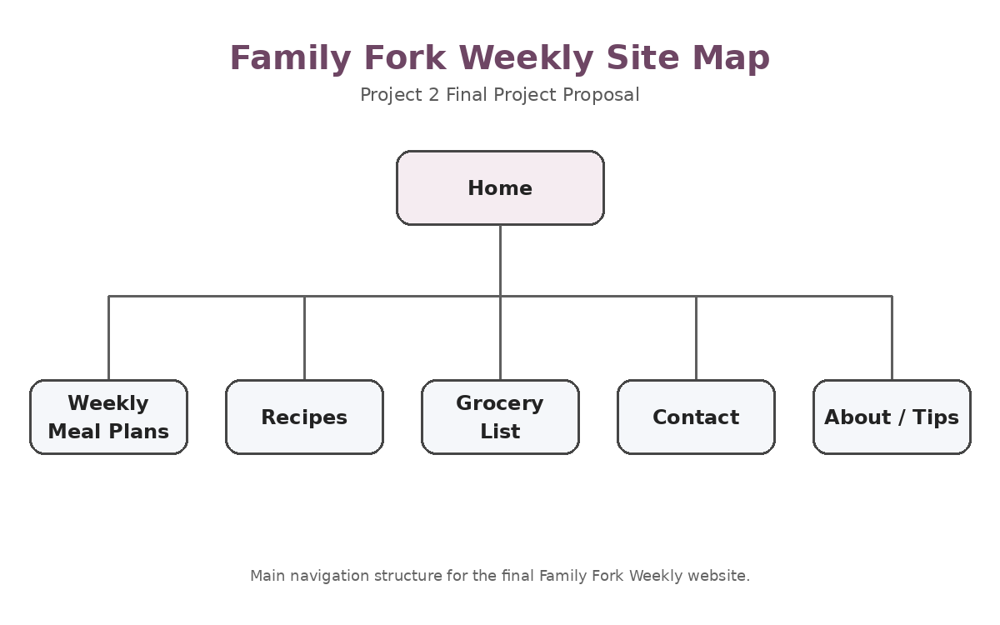
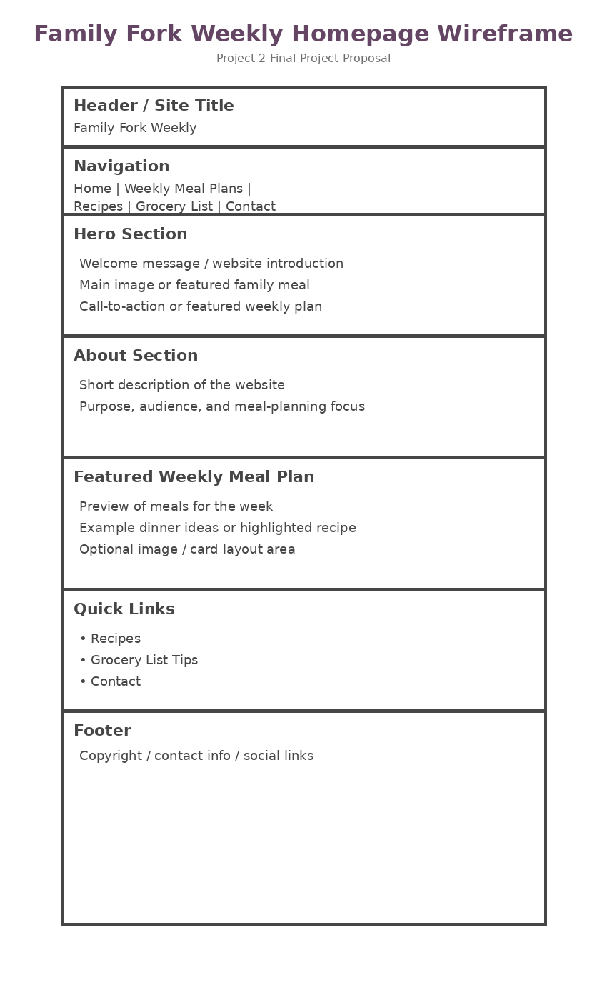

Project Concept
Website Overview
My final project website will be called Family Fork Weekly. This website will be designed to help busy families plan simple weekly meals, organize recipes, and create grocery lists. The main goal of the website is to make meal planning less stressful by giving users a clear place to find affordable meal ideas, weekly dinner plans, and grocery planning tips.
Intended Audience
The intended audience for this website is families, parents, students, and busy adults who want help planning meals for the week. The website will focus on easy meals that do not require complicated ingredients or a lot of time to prepare.
Website Objectives
- Provide a simple and organized meal-planning resource.
- Help users find family-friendly recipes for the week.
- Make grocery shopping easier through planning tips and list ideas.
Possible Website Features
- Weekly meal plan examples
- Recipe categories
- Grocery list tips
- Simple navigation
- Contact page
Final Project Goal
The goal of Family Fork Weekly is to create a helpful and organized website that makes weekly meal planning feel more manageable. The website should be easy to use, visually clear, and useful for people who want to save time planning meals.
Site Map
The content for the Family Fork Weekly website will be organized into five main pages. These pages will help visitors move easily through the website and find meal-planning information quickly.
Planned Website Pages
- Home
- Weekly Meal Plans
- Recipes
- Grocery List
- Contact
Site Organization
The homepage will introduce the purpose of the website and guide users to the main sections. The Weekly Meal Plans page will include sample weekly dinner plans. The Recipes page will organize recipe ideas by category. The Grocery List page will provide tips for planning shopping lists, and the Contact page will allow visitors to reach out with questions or suggestions.
The site map below shows how the pages will connect to the homepage.

Wireframe
The homepage wireframe shows the basic layout planned for the Family Fork Weekly website. The design includes a header, navigation menu, hero section, main content areas, quick links, and footer. This layout will help organize the website in a way that is simple for visitors to understand and use.
Homepage Layout Plan
The top of the homepage will include the website title and navigation links. The main content area will introduce the purpose of the website and highlight weekly meal-planning content. The lower sections will include quick links to recipes, grocery list tips, and contact information.

Project Resources
One resource that will help me complete my final project is the W3Schools HTML Tutorial. This website provides examples of HTML elements, page structure, links, images, and lists. I will use this resource as a reference while building the Family Fork Weekly website.
The resource can be found here: W3Schools HTML Tutorial
I will also use this resource to check that my webpage uses proper HTML structure and follows basic coding rules. This will help me create a website that is organized, readable, and easy to navigate.